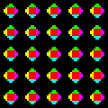

AdventureSoft was a game company based in Canada that operated between 1985 and 1997, making games for the Sinclair ZX Spectrum (ZXS), Commodore 64 (C64) and also one final title for the Nintendo 64 (N64). 20 games were developed, 12 games were released. The leaderboards for the released games are below!
The first AdventureSoft title that would be released is also one of the more bland. Strategy is straightforward: move boxes to their designated locations while avoiding the devil. The devil gets faster each level, so it eventually does become unplayable. The fastest times for completing the first 10 levels are below.
| Ranking | Player | Time |
|---|---|---|
| 1 | siknoid | 1:57 |
| 2 | mk70 | 2:33 |
| 3 | doble1 | 2:34 |
| 4 | speclord | 2:36 |
| 5 | j1nkyo | 2:40 |
The second AdventureSoft title had a small step up in quality. This game has some nice graphics for the era, and it has sound! Pretty nifty little game, and it's actually quite fun to play. Another arcade style game (that is, it never ends), you see how fast you can rotate cubes on a map to all have the same colour on top (see recreation image). There's a hundred cubes, and trying for a fast time is really fun!
| Ranking | Player | Time |
|---|---|---|
| 1 | siknoid | 1:10 |
| 2 | mk70 | 1:40 |
| 3 | asi9 | 1:41 |
| 4 | filsh73 | 1:43 |
| 5 | speclord | 1:49 |
An oddball title that would eventually get a sequel on the Nintendo 64. This is an RPG with an overall generic story. It's worth playing through for the twist at the end, though.
| Ranking | Player | Time |
|---|---|---|
| 1 | mk70 | 1:47:02 |
Definitely the most obscure "game" on the list, this was one of the 6 programs part of a test suite that AdventureSoft released for Commodore 64 owners. It's actually a little twin-stick arcade-style game, where you control a ship and shoot oncoming space rocks. It controls a lot like Asteroids, in fact, it's pretty much a twin-stick version of Asteroids. Good fun! High scores are below.
| Ranking | Player | Score |
|---|---|---|
| 1 | siknoid | 460,900 |
| 2 | mk70 | 230,800 |
| 3 | astmaxx | 200,300 |
| 4 | j3rb3r | 160,700 |
| 5 | holojem | 150,900 |
Live life, make friends along the way. One of the most unique titles on the Commodore. This is probably my favourite AdventureSoft game, though it's admittedly not a great one to speedrun.
| Ranking | Player | Time |
|---|---|---|
| 1 | mk70 | 2:10:59 |